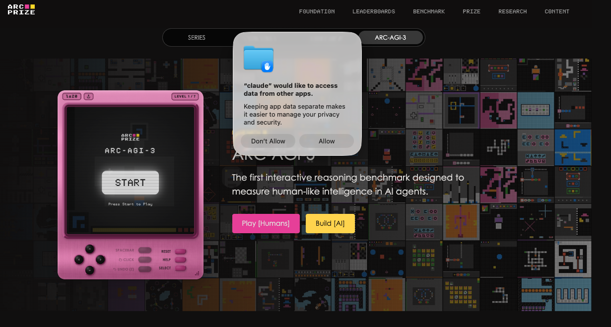
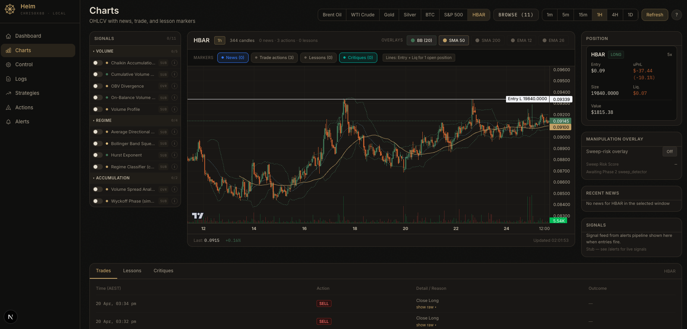
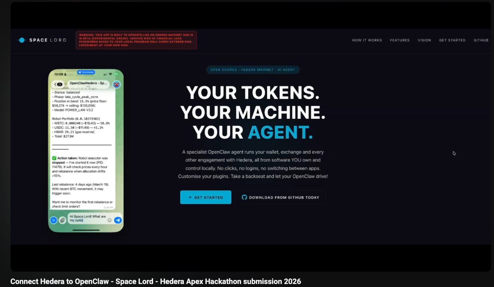

To the operators who'd rather build than rent
Do things
your way.
Nvidia sells the same chips to a one-person shop and to Anthropic. Open source super agents live on GitHub. Edge compute runs on your own hardware. Crypto rails don't ask permission. The vertical software stack is collapsing, and a small operator can now ship what used to take a hundred engineers.
There has never been a better time to build something of your own.
Now Shipping sovereign AI tools · Backing the open source fightback · Taking project engagements
Field Notes
Where the industry is actually going, and where it isn't. Architecture breakdowns, hard takes on what's worth building, and what most consultants won't tell you because it'd cost them the contract.
AI Skill Pack
A markdown skill bundle you run on your own machine. Interviews you, researches your business, captures your branding, and ships back a one page audit. No SaaS dashboard. No data leaving your laptop.
Build Engagements
Strategy, architecture, and the actual code. Sovereign agents, edge compute, custom scaffolding for the workflow you actually run. Project work only, no retainers, no rented brain.
AI is coming for every business that won't move. While most boards are still debating which committee should approve the chatbot, the operators who'll win the next decade are already shipping. The window to be one of them is wide open right now and it won't stay that way for long.
Most Australian businesses are running someone else's software at someone else's price. Thin margins, data leaving the country, a SaaS tax stapled to every workflow. AI is the first technology in thirty years that hands a small operator real leverage. Small teams now do what used to need a department. Owners can finally outpace incumbents. The instinct to take the work back, to own the thing instead of renting it, is the right one.
Let's build.
Bring a brief, a half-formed idea, or just the bottleneck that's been keeping you up. No sales bots, no contact-form purgatory, no off-shored intake team. You'll always be dealing with a human on this end — and you'll know inside a day whether there's a real project here or not.
Long form,
no fluff.
Three serious papers on where AI actually is, where it isn't, and what to do with the gap. Months of research and field work behind each one. Not LinkedIn slop, not a recycled vendor pitch, and not the sanitised version most consultants give you. Written for operators who'd rather think than be sold to.
-
Paper 03 · 6 minThe Workshop
The discovery session
A walk through the two hour workshop that ends with a working artefact and a roadmap rather than a sales deck. What I'll ask, what we'll map, what you walk away with. The closest thing to a free strategy session you'll find anywhere on the internet.
Read → -
Paper 02 · 9 minWhere the money actually is
What businesses actually get from AI
Two real value streams, the data leakage tax most consultants won't talk about, and a hard rule about when not to use the magic robot. Plus the reason deterministic code still beats your favourite agent for the boring jobs, and why that matters more than any benchmark.
Read → -

Paper 01 · 7 minThe benchmark a child solvesAI is not intelligent (yet)
Frontier models score under one percent on ARC-AGI-3, a benchmark a child solves. The implications for your business are bigger than the headlines suggest, and the most expensive component of any working AI deployment is still the human pilot. Here's why, and what to do about it.
Read →
Resources · stack, story, hardware
The deep dive. Six people worth following, the full ranked tools rotation, the AGI ceiling essay, the industrial wave thesis with named picks, hardware strategy, and a section on staying sane while doing this work.
What I run
every day
A multi-model rotation. No single model is best at everything, and the price gap between using a frontier model for a job and a cheaper specialist is enormous. Match the model to the task and the bill drops by more than half without losing quality.

Claude Code · Opus 4.7 (heavy)
Best tool I have for greenfield architecture. Fills in the gaps a senior engineer would fill without being asked.

Codex · GPT 5.5
Where Opus designs, Codex finishes. More precise on bug-hunting and data-flow correctness. Bundled with ChatGPT.
Kimi K2 · MiniMax M2 · DeepSeek V4
Chinese stack. Genuinely competitive on website and video work, dramatically cheaper for bulk parsing.

Gemini 3.1 + Antigravity
Savant: takes you literally. Useful for that one bug the smarter models keep missing, and for visual layer work.
Custom builds
Purpose-built scaffolds for specific client workflows. High reliability, low maintenance.
Hermes
Nous Research's open agent harness. The one I reach for when a custom build is overkill but you want something local and inspectable.
OpenRouter
Dynamic model switching to keep bills low and capability high. Sits behind whichever harness is on top.
Things I've
shipped
Code that ships to production and talks to the network directly. No platforms, no middlemen, no permission asked. Real money on the line, real users, open source where it counts.

Live · PythonHyperliquid Agent
Trades the markets that actually matter now. Oil futures, S&P 500, Intel, Nvidia, Tesla, and tokenised OpenAI and Anthropic equity. Autonomous, on chain, no broker. Helm runs locally with full position, signals, news, and lesson markers in one pane of glass.
 Live · Python
Live · Python
Power-Law Allocation
A deterministic Bitcoin allocation framework. No databases, no machine learning, no historical feeds. Date and price are enough. Power-law floor, Kleiber-decay ceiling, and an honest answer to what percentage of your stack should be in BTC right now.

Live · HederaSpace Lord
The most ambitious version of the thesis. A self-hosted alternative to exchanges, apps, and even key providers. AI driven DeFi running on your own edge compute. Shipped for the Apex Hackathon, 2025.
claude-cli-auth
Authentication tooling for the Claude Code ecosystem. Small, sharp, and built to remove a friction point I hit daily. The kind of tool you only notice when it's missing.
Run a real audit
on your own machine
A markdown skill bundle you point your AI agent at. It interviews you, researches your business from public sources, captures your branding, detects which AI providers you already have configured, and produces a one-page report. Bring the output to a discovery call and we start ten steps ahead.
Then attach to Claude Code, Codex, Hermes, or any agent that reads markdown. Tell it: "Run the onboarding kit." That's it.
Ten questions
A short, sharp interview. Pushes back if your answers are vague.
Public-source pass
The agent researches your company online. Surfaces something you didn't mention.
Brand capture
Logo, palette, fonts, voice samples. Useful for any future build work.
Provider detection (opt-in)
Read-only existence checks for Anthropic, OpenAI, OpenRouter, etc. Never reads key values.
One-page audit, themed to your brand
Three ranked AI integration opportunities specific to you, recommended provider config, and a 90-day picture of what good looks like. Plus a structured consultant brief you can send to me when you book a call.
- → audit-report.html · your one-page client report, themed to your brand
- → consultant-brief.md · structured summary for me, ~400 words
- → branding.json · captured colours, fonts, logos, voice
- → stack.json · what AI providers and tools you already have
No file content reading. No directory walks. No browser history. No mail. Stack detection is opt-in and existence-checks-only, never reads key values. Nothing is transmitted off your machine. You decide what to share with me. Full SECURITY.md in the repo.